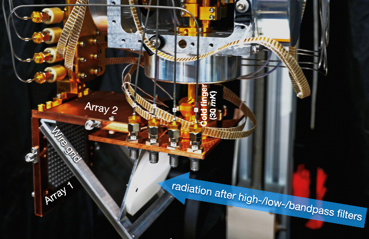

MKID Design
Design and characterization of Microwave Kinetic Inductance Detectors for astronomical instrumentation.
Postdoctoral Fellow · Department of Physics · CUHK
Astronomical instrumentation researcher working on superconducting Microwave Kinetic Inductance Detectors, submillimetre camera systems, cryogenic integration, and readout characterization.
Research Scope

Research Expertise
Design and characterization of Microwave Kinetic Inductance Detectors for astronomical instrumentation.
Development and optimization of readout systems for superconducting resonator arrays.
Design and integrate a submm polarimetry
Selected Publications
Wei-tao Lyu, Hua-Bai Li, Jie Hu, Sheng-Cai Shi, Qiang Zhi and Jing Li. (2026). Superconductor Science and Technology
Lyu, W., Li, H. B., Zhi, Q., Li, J., & Shi, S. (2026). RAS Techniques and Instruments, rzag007.
吕伟涛，黄俊锟，孙笳淋，李华白 (2025). 天文学进展, 第43卷 第4期.
Weitao Lyu, Junkun Huang & Hua-bai Li (2024). Millimeter, Submillimeter, and Far-Infrared Detectors and Instrumentation for Astronomy XII, 131021D.
Lyu, W. T., Zhi, Q., Hu, J., Li, J., & Shi, S. C. (2024). Chinese Physics B, 33(2), 027401.
Lv, W. T., Ding, J. Q., Zhi, Q., Wang, Z., Li, J., & Shi, S. C. (2021). AIP Advances, 11(9), 095308.
Academic Path
Department of Physics, Chinese University of Hong Kong. Supervisor: Prof. Hua-Bai Li.
Department of Physics, Chinese University of Hong Kong. Supervisor: Prof. Hua-Bai Li.
School of Astronomy and Space Science, University of Science and Technology of China. Advisor: Prof. Sheng-Cai Shi.
School of Physics, Huazhong University of Science and Technology.
Research Project
Building a pioneering submillimetre astronomical camera. Role: cryostat system integration with superconducting MKIDs and cold optics.
Technical Skills
Superconducting resonators, MKIDs, device characterization.
Cryostat integration and optimization for astronomy systems.
Signal processing and calibration for superconducting devices.
Simulation and data analysis tools for instrumentation work.
Contact
For research discussions, collaboration, or publication details, use the contact links below.